hexo bug大小事 2024-09-05 1.hexo generate 進行輸出網頁, 主題跟圖片無法顯示 通常會出現這種情況, 是因為 初始設定為 “絕對路徑” 而非 “相對路徑” 什麼是 絕對路徑 和 相對路徑 可以參考以下範例 範例 : 1234567相對路徑<img src="bear3721488.png"><img src="images/bear3721488.png"><img src="./images/bear3721488.png">絕對路徑<img src="/images/bear3721488.png"> 解決方法 : 1. 修改 _config.yml 2. relative_link: false 這行改為 true 即可 12# 決對路徑改為相對路徑relative_link: true 改完主題就會出現, 如果圖片假如沒有出來 3. 那就只能從 hexo generate 生成的 html 進行修改 把 “絕對路徑” 都修改成 “相對路徑” 一個個修 更改前 更改後 其實也就只是加上 “.” 在 / 前面而已 如果不知道什麼是絕對路徑或相對路徑 可以看參考下面的網址 5.6 HTML 的絕對路徑與相對路徑 參考資料 安裝 Hexo5.6 HTML 的絕對路徑與相對路徑 (筆記)學習Hexo blog(2) 2024-08-24 新增文章 在終端機上輸入 1hexo new (檔名) 範例 : 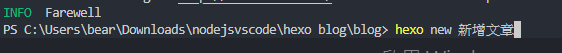 就會新增一個 (檔名).md (文章) 在 _posts 資料夾底下 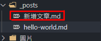 新增成功 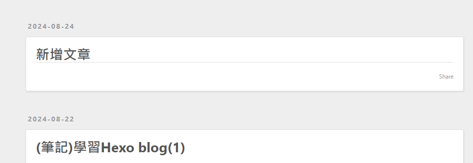 新增標籤 在 tags: (輸入你要的標籤名) 1tags: [小菜雞的學習筆記,Hexo學習] 範例 : 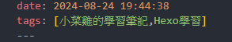 輸出結果 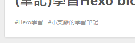 (筆記)學習Hexo blog(1) 2024-08-22 Hexo 介紹 Hexo是基於Node.js 開發的網誌框架，可以生成blog(部落格)，並透過GitHub Pages 就可以架設免費的blog，無須24小時開機的伺服器、對外連線的IP和網域名稱。 優點 : 支援 Markdown 語法 Hexo 不會占用太多的空間和資源，單純適合架設技術blog 可部屬到GitHub Pages 或 Heroku 免費架設blog 前置作業 1. 安裝Node.js由於是Node.js開發的網誌框架, 所以需要先安裝Node.js。直接到官網安裝即可 Node官方網站不會安裝的話，以下的網址可供參考VSCode 和 Node.js 環境安裝 , 外加 VSCode 主題美化 2. 安裝hexoHexo 官方網站安裝前, 終端機需要移動到你當前目錄 (想安裝hexo的資料夾位置)，進行安裝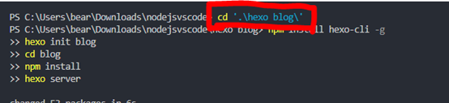 複製下圖的程式碼, 貼在終端機上進行安裝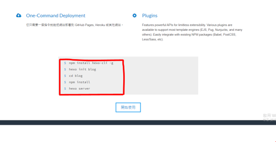 此步驟可能會遇到下列問題 Terminal(終端機)、vscode終端機，有些時候會出現「因為這個系統上已停用指令碼執行，所以無法載入…」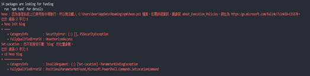 會出現這個問題是因為Windows 在執行政策上會有一定的安全性設置, 主要是避免執行了一些 不安全的指令來源。Ex: 執行病毒指令等……。因此在一般情況下Windows 的執行政策 (Set-ExecutionPolicy) 預設是 Restricted, 也就是「限制原則」。所以只要解除限制原則即可。 解決方法 : 1. 「以系統管理員身分執行」開啟 Visual Studio Code, 否則會出現權限不足 2. 在終端機上輸入 Get-ExecutionPolicy -List (查看目前執行原則) 3. 在終端機上輸入 Set-ExecutionPolicy RemoteSigned (不需要簽署就可以執行) P.S 終端機要全部關閉在開啟, 這樣子才能正常使用以上指令。 參考解法 解決 Windows 上輸入指令出現「因為這個系統上已停用指令碼執行，所以無法載入…」的問題 3. 執行 hexo1hexo server 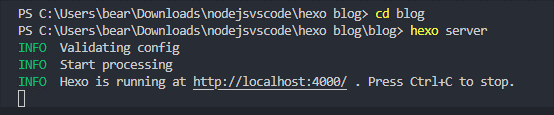 瀏覽器上輸入 localhost:4000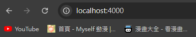 安裝成功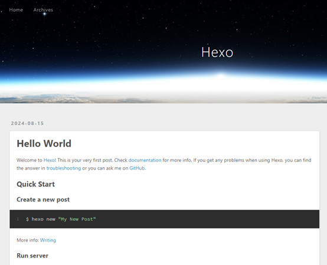 4. 編寫文章Blog資料夾裡, 有一個source > _posts > hello-world.md 那裡就是修改文章的地方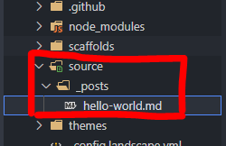 內容語法是使用 MarkDown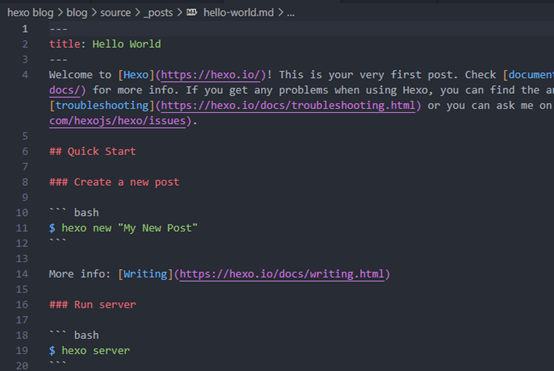 想知道更多語法可以使用下面的網站Markdown語法大全此語法很簡單, 只要參考上面即可唯一例外的是 Markdown 語法要特別解說 Markdown 圖片語法 以下為正常 markdown 語法 抓取圖片 1 圖片不建議使用 Markdown 語法, 建議使用 html 語法 好處是 可以隨意控制圖片大小 遇到的問題 如果遇上 Hexo 無法加載圖片的情況 電腦圖片必須放在 /source 文件夾裡(和_posts位置一樣) 放在其他地方一律讀取不到 有沒有 .. 沒差, 位置對就可以了 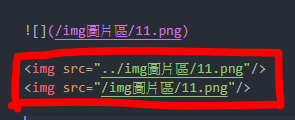 參考資料 安裝Node.js 教學[筆記][node.js]第一次建置node.js開發環境和安裝npm就上手！hexo 官方網站Hexo 教學影片十分鐘小魔法 - 不需要寫程式也不用花錢，10 分鐘架設出專屬於自己的部落格，建立個人品牌 | 使用 Hexo + GitHub Hexo 教學【學習筆記】如何使用 Hexo + GitHub Pages 架設個人網誌Day 2：挑選 Hexo 作為工程師技術部落格 _終端機指令碼無法載入解決 Windows 上輸入指令出現「因為這個系統上已停用指令碼執行，所以無法載入…」的問題
hexo bug大小事 2024-09-05 1.hexo generate 進行輸出網頁, 主題跟圖片無法顯示 通常會出現這種情況, 是因為 初始設定為 “絕對路徑” 而非 “相對路徑” 什麼是 絕對路徑 和 相對路徑 可以參考以下範例 範例 : 1234567相對路徑<img src="bear3721488.png"><img src="images/bear3721488.png"><img src="./images/bear3721488.png">絕對路徑<img src="/images/bear3721488.png"> 解決方法 : 1. 修改 _config.yml 2. relative_link: false 這行改為 true 即可 12# 決對路徑改為相對路徑relative_link: true 改完主題就會出現, 如果圖片假如沒有出來 3. 那就只能從 hexo generate 生成的 html 進行修改 把 “絕對路徑” 都修改成 “相對路徑” 一個個修 更改前 更改後 其實也就只是加上 “.” 在 / 前面而已 如果不知道什麼是絕對路徑或相對路徑 可以看參考下面的網址 5.6 HTML 的絕對路徑與相對路徑 參考資料 安裝 Hexo5.6 HTML 的絕對路徑與相對路徑
(筆記)學習Hexo blog(2) 2024-08-24 新增文章 在終端機上輸入 1hexo new (檔名) 範例 : 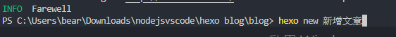 就會新增一個 (檔名).md (文章) 在 _posts 資料夾底下 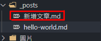 新增成功 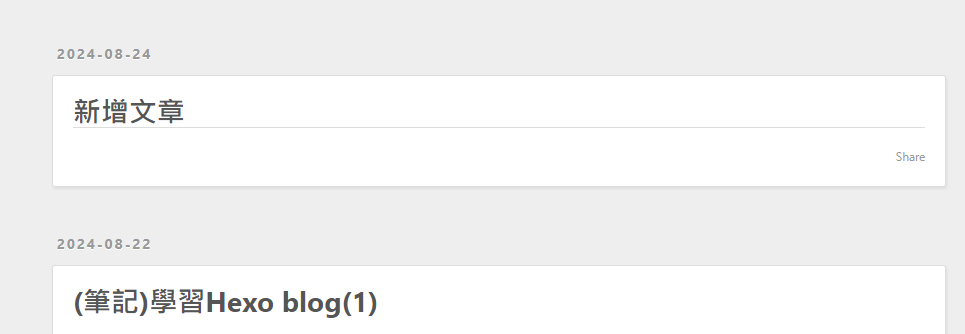 新增標籤 在 tags: (輸入你要的標籤名) 1tags: [小菜雞的學習筆記,Hexo學習] 範例 : 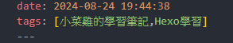 輸出結果 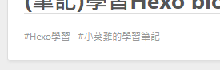
(筆記)學習Hexo blog(1) 2024-08-22 Hexo 介紹 Hexo是基於Node.js 開發的網誌框架，可以生成blog(部落格)，並透過GitHub Pages 就可以架設免費的blog，無須24小時開機的伺服器、對外連線的IP和網域名稱。 優點 : 支援 Markdown 語法 Hexo 不會占用太多的空間和資源，單純適合架設技術blog 可部屬到GitHub Pages 或 Heroku 免費架設blog 前置作業 1. 安裝Node.js由於是Node.js開發的網誌框架, 所以需要先安裝Node.js。直接到官網安裝即可 Node官方網站不會安裝的話，以下的網址可供參考VSCode 和 Node.js 環境安裝 , 外加 VSCode 主題美化 2. 安裝hexoHexo 官方網站安裝前, 終端機需要移動到你當前目錄 (想安裝hexo的資料夾位置)，進行安裝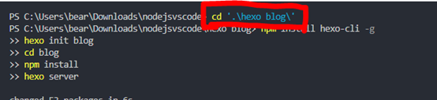 複製下圖的程式碼, 貼在終端機上進行安裝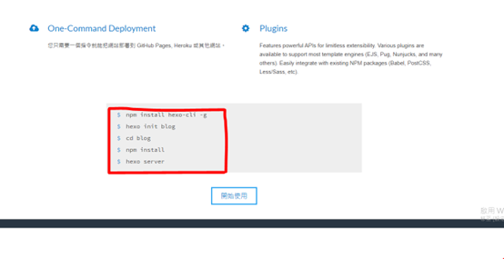 此步驟可能會遇到下列問題 Terminal(終端機)、vscode終端機，有些時候會出現「因為這個系統上已停用指令碼執行，所以無法載入…」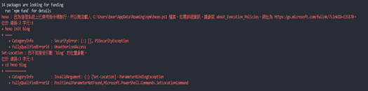 會出現這個問題是因為Windows 在執行政策上會有一定的安全性設置, 主要是避免執行了一些 不安全的指令來源。Ex: 執行病毒指令等……。因此在一般情況下Windows 的執行政策 (Set-ExecutionPolicy) 預設是 Restricted, 也就是「限制原則」。所以只要解除限制原則即可。 解決方法 : 1. 「以系統管理員身分執行」開啟 Visual Studio Code, 否則會出現權限不足 2. 在終端機上輸入 Get-ExecutionPolicy -List (查看目前執行原則) 3. 在終端機上輸入 Set-ExecutionPolicy RemoteSigned (不需要簽署就可以執行) P.S 終端機要全部關閉在開啟, 這樣子才能正常使用以上指令。 參考解法 解決 Windows 上輸入指令出現「因為這個系統上已停用指令碼執行，所以無法載入…」的問題 3. 執行 hexo1hexo server 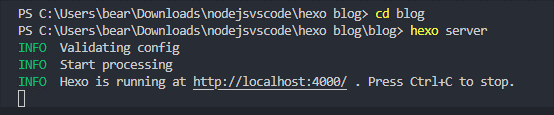 瀏覽器上輸入 localhost:4000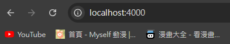 安裝成功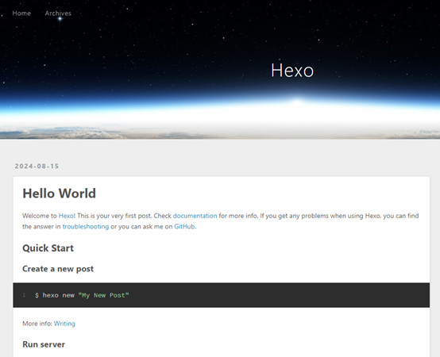 4. 編寫文章Blog資料夾裡, 有一個source > _posts > hello-world.md 那裡就是修改文章的地方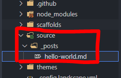 內容語法是使用 MarkDown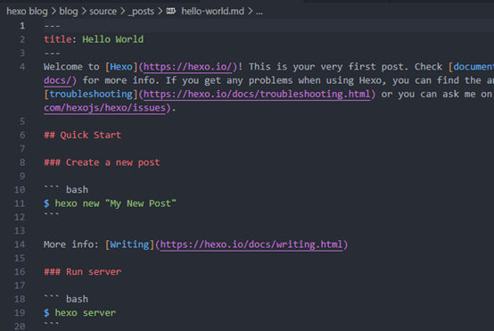 想知道更多語法可以使用下面的網站Markdown語法大全此語法很簡單, 只要參考上面即可唯一例外的是 Markdown 語法要特別解說 Markdown 圖片語法 以下為正常 markdown 語法 抓取圖片 1 圖片不建議使用 Markdown 語法, 建議使用 html 語法 好處是 可以隨意控制圖片大小 遇到的問題 如果遇上 Hexo 無法加載圖片的情況 電腦圖片必須放在 /source 文件夾裡(和_posts位置一樣) 放在其他地方一律讀取不到 有沒有 .. 沒差, 位置對就可以了 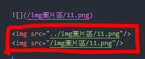 參考資料 安裝Node.js 教學[筆記][node.js]第一次建置node.js開發環境和安裝npm就上手！hexo 官方網站Hexo 教學影片十分鐘小魔法 - 不需要寫程式也不用花錢，10 分鐘架設出專屬於自己的部落格，建立個人品牌 | 使用 Hexo + GitHub Hexo 教學【學習筆記】如何使用 Hexo + GitHub Pages 架設個人網誌Day 2：挑選 Hexo 作為工程師技術部落格 _終端機指令碼無法載入解決 Windows 上輸入指令出現「因為這個系統上已停用指令碼執行，所以無法載入…」的問題